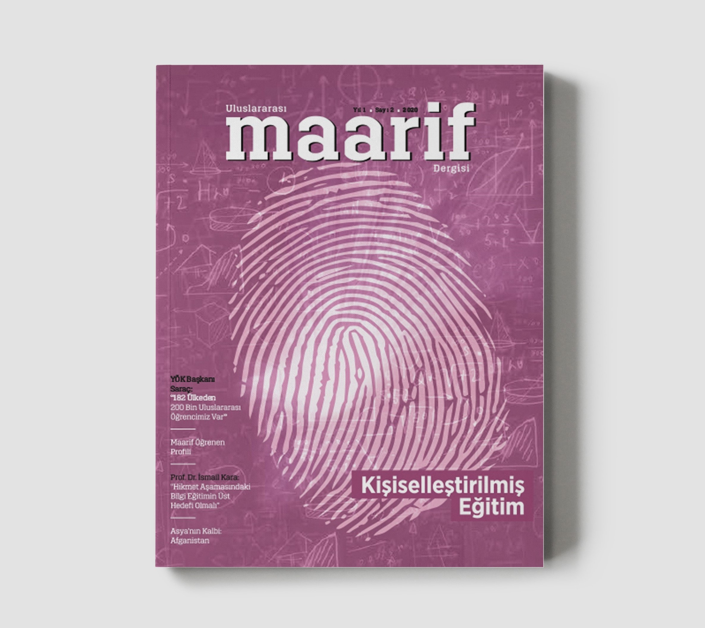
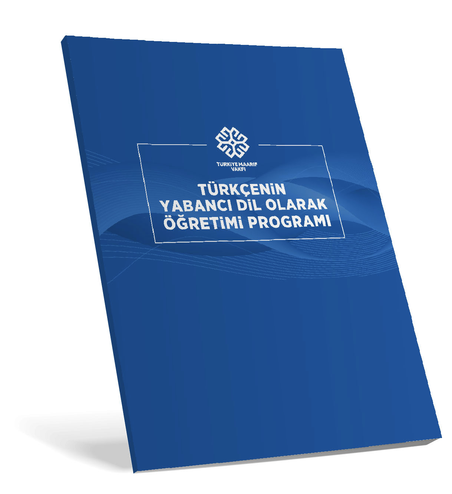
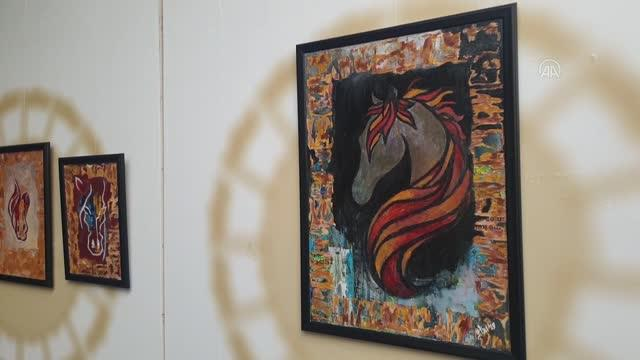

Türkiye Maarif Vakfı'nın dergi, program ve kitaplarına buradan ulaşabilirsiniz.
Uluslararasi Maarif Dergisi 3
2021

Uluslararasi Maarif Dergisi 2
Uluslararasi Maarif Dergisi 1

Turkcenin Yabanci Dil Olarak Ogretimi Programi 2 Baski

Turkcenin Yabanci Dil Olarak Ogretimi Programi1